Code
task_df <- read_rds(here("data", "final", "task.rds"))
participants <- read_rds(here("data", "final", "participants.rds"))Recall that Task 4 is the task where we ask the participant to find the highest sloped on the CDF (i.e., find mode on CDF).
We ran the following models:
Finally we compared all models in Section 7.
Read in data
task_df <- read_rds(here("data", "final", "task.rds"))
participants <- read_rds(here("data", "final", "participants.rds"))Get task 4 specific data:
data_to_screen_slope <- function(k){
return(k * 395 / 53.5)
}
task4_df <- task_df %>% filter(task == "task4") %>%
select(-slider.x, -slider.y) %>%
mutate(data.select.slope = dsgt(data.select.x, param.mu, param.sigma, param.lambda, param.p, param.q, mean.cent=FALSE),
data.ans.slope = dsgt(param.mu, param.mu, param.sigma, param.lambda, param.p, param.q, mean.cent=FALSE)) %>%
right_join(participants, by = join_by(participantId)) %>%
mutate(phy.select.x = pixel_to_phy_x(pixel.select.x, pixelToMM),
phy.select.y = pixel_to_phy_y(pixel.select.y, pixelToMM),
va.select.x = vis_angle(phy.select.x, dist_to_screen),
va.select.y = vis_angle(phy.select.y, dist_to_screen)) %>%
mutate(data.ans.x = param.mu,
data.ans.y = 1 / 2 * (psgt(data.ans.x + tolerance, param.mu, param.sigma, param.lambda, param.p, param.q, mean.cent = FALSE) +
psgt(data.ans.x - tolerance, param.mu, param.sigma, param.lambda, param.p, param.q, mean.cent = FALSE))) %>%
mutate(pixel.ans.x = data_to_pixel_x(data.ans.x),
pixel.ans.y = data_to_pixel_y(data.ans.y)) %>%
mutate(phy.ans.x = pixel_to_phy_x(pixel.ans.x, pixelToMM),
phy.ans.y = pixel_to_phy_y(pixel.ans.y, pixelToMM)) %>%
mutate(va.ans.x = vis_angle(phy.ans.x, dist_to_screen),
va.ans.y = vis_angle(phy.ans.y, dist_to_screen)) ## Plot relations
task4_df %>% ggplot(aes(x = data_to_screen_slope(data.select.slope) - data_to_screen_slope(data.ans.slope))) +
geom_dots()
task4_df %>% ggplot(aes(x = va.ans.x - va.select.x)) + geom_dots()
task4_df %>% ggplot(aes(x = va.ans.y - va.select.y)) + geom_dots()
task4_df %>% ggplot(aes(x = atan(va.ans.y / va.ans.x) * 180 / pi)) + geom_dots()
task4_df %>% ggplot(aes(x = va.ans.y / va.ans.x, y = data.ans.slope)) +
geom_point() + coord_equal()
task4_df %>% ggplot(aes(x = data.select.slope - data.ans.slope)) +
geom_dots()
task4_df %>% filter(data.select.slope - data.ans.slope == 0)
task4_df %>% ggplot(aes(x = atan(data.select.slope) * 180 / pi - atan(data.ans.slope) * 180 / pi)) +
geom_dots()
task4_df %>% ggplot(aes(x = atan(data_to_screen_slope(data.select.slope)) * 180 / pi - atan(data_to_screen_slope(data.ans.slope)) * 180 / pi)) +
stat_ecdf()If we map the mathematical slope to the actual slope, this is what we get:
task4_df %>% ggplot(aes(x = data_to_screen_slope(data.select.slope),
y = data_to_screen_slope(data.ans.slope))) +
geom_point(alpha = 0.5) +
coord_equal()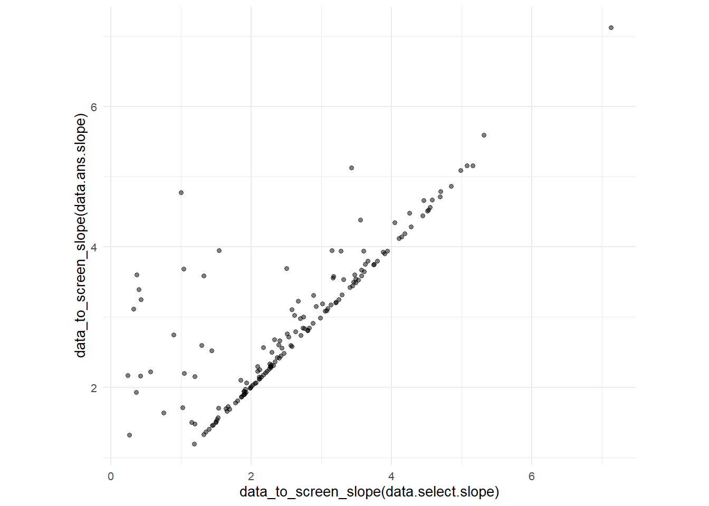
task4_df %>% ggplot(aes(x = data_to_screen_slope(data.select.slope) - data_to_screen_slope(data.ans.slope))) +
geom_dots()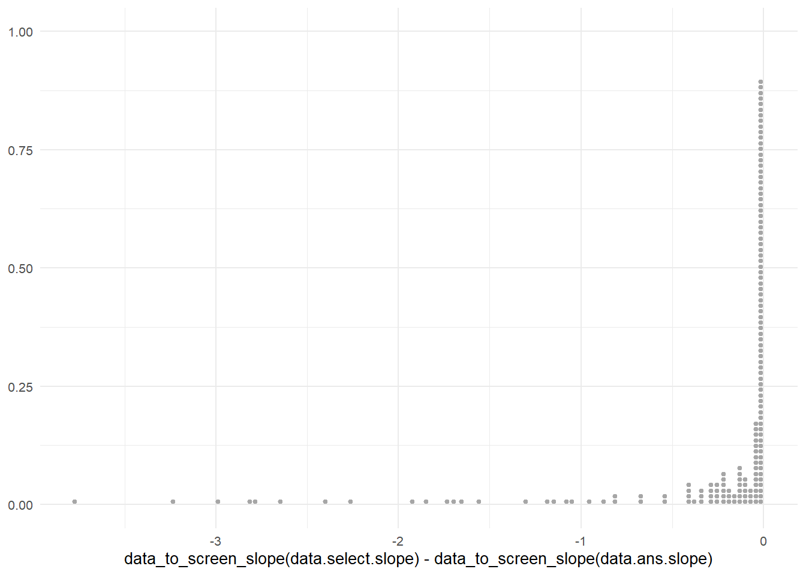
Let’s first see the distribution of signed error:
task4_df %>% ggplot(aes(x = data.select.slope - data.ans.slope)) +
geom_dots()
task4_df %>% ggplot(aes(y = data.select.slope - data.ans.slope, x = dist_to_screen)) +
geom_point(alpha = 0.5)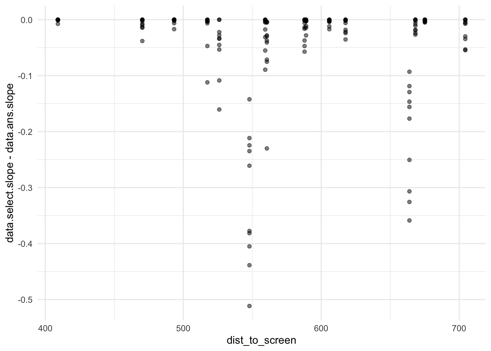
Let’s see if there’s any obvious relation between signed error and parameters of the distribution:
task4_df %>% ggplot(aes(y = data.select.slope - data.ans.slope, x = dist_to_screen)) +
geom_point()
task4_df %>% ggplot(aes(y = data.select.slope - data.ans.slope, x = param.mu)) +
geom_point()
task4_df %>% ggplot(aes(y = data.select.slope - data.ans.slope, x = param.sigma)) +
geom_point()
task4_df %>% ggplot(aes(y = data.select.slope - data.ans.slope, x = param.lambda)) +
geom_point()
task4_df %>% ggplot(aes(y = data.select.slope - data.ans.slope, x = param.p)) +
geom_point()
task4_df %>% ggplot(aes(y = data.select.slope - data.ans.slope, x = param.q)) +
geom_point()
task4_df %>% ggplot(aes(x = data.select.slope - data.ans.slope)) +
geom_dots()Math model:
\[\begin{align} \text{error_i} &\sim \text{Exponential}(\lambda_{\text{PID}[i]}) \\ \log(\lambda_j) &\sim \mathcal{N}(\mu_\lambda, \sigma_\lambda) \\ \mu_\lambda &\sim \mathcal{N}(0, 1) \\ \sigma_\lambda &\sim \text{Half-Cauchy}(0, 1) \end{align}\]
Formula and prior:
f <- bf(error ~ 0,
mu ~ (1 | participantId),
family = exponential())
# mu has log-link, so we don't pose any bounds on it
p <- c(
prior(normal(0, 1), class = Intercept),
prior(normal(0, 1), class = sd, group = participantId, lb = 0)
)Fit the model:
model.exponential <- task4_df %>%
mutate(error = abs(data_to_screen_slope(data.ans.slope) - data_to_screen_slope(data.select.slope))) %>%
# brms need rsp > 0
mutate(error = ifelse(abs(error) < tolerance, tolerance, error)) %>%
brm(formula = f,
data = .,
prior = p,
chains = 4,
cores = 4,
file = here("fitted_models", "task4.exponential"),
file_refit = "on_change",
save_pars = save_pars(all = TRUE),
iter = 6000
)Check fit:
summary(model.exponential) Family: exponential
Links: mu = log
Formula: error ~ 0
mu ~ (1 | participantId)
Data: . (Number of observations: 160)
Draws: 4 chains, each with iter = 6000; warmup = 3000; thin = 1;
total post-warmup draws = 12000
Multilevel Hyperparameters:
~participantId (Number of levels: 16)
Estimate Est.Error l-95% CI u-95% CI Rhat Bulk_ESS Tail_ESS
sd(Intercept) 1.54 0.28 1.09 2.17 1.00 2201 3977
Regression Coefficients:
Estimate Est.Error l-95% CI u-95% CI Rhat Bulk_ESS Tail_ESS
Intercept -1.91 0.38 -2.62 -1.16 1.00 1471 2976
Draws were sampled using sampling(NUTS). For each parameter, Bulk_ESS
and Tail_ESS are effective sample size measures, and Rhat is the potential
scale reduction factor on split chains (at convergence, Rhat = 1).plot(model.exponential)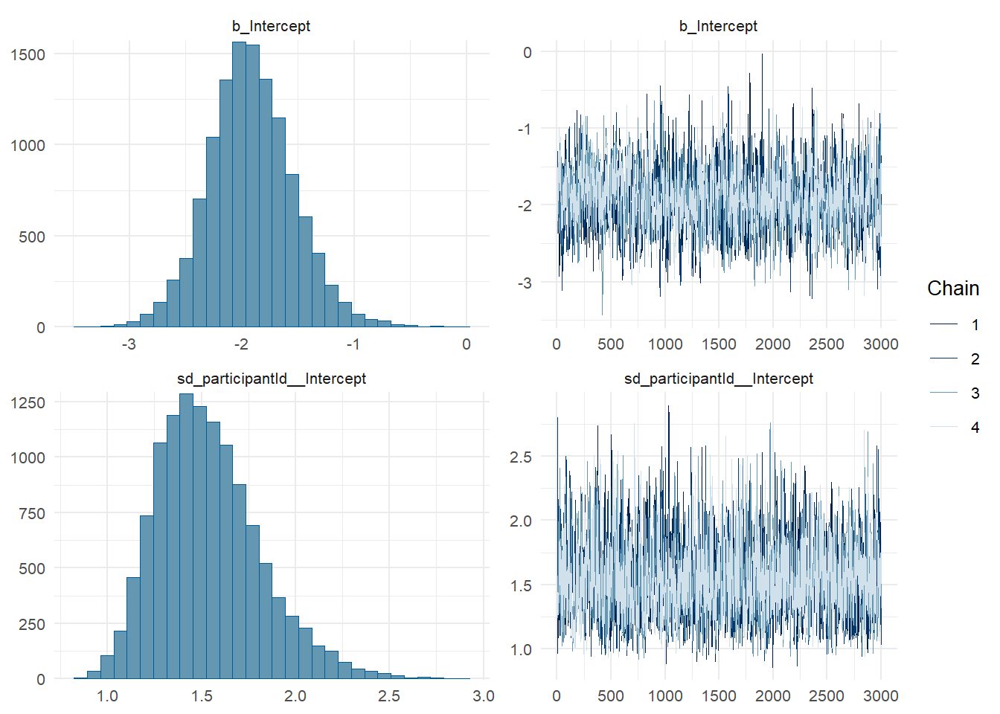
pp_check(model.exponential, ndraws = 100)
pp_check(model.exponential, ndraws = 100, type = "pit_ecdf")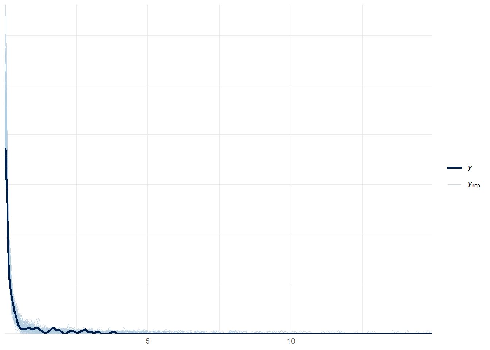
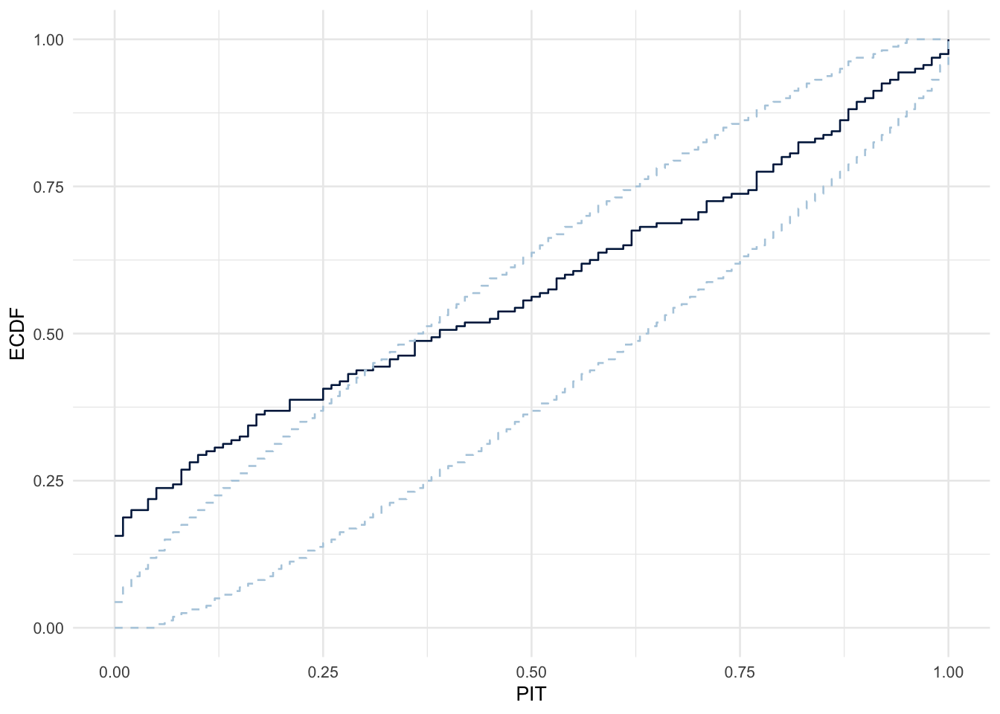
TODO: Overlay plot:
prediction <- task4_df %>%
mutate(error = abs(data_to_screen_slope(data.ans.slope) - data_to_screen_slope(data.select.slope))) %>%
mutate(error = ifelse(abs(error) < tolerance, tolerance, error)) %>%
add_predicted_draws(model.exponential, re_formula = NA)
prediction %>% ggplot() +
stat_slab(aes(x = .prediction),
fill = "skyblue", alpha = 0.8) +
geom_dots(data = task4_df, aes(x = data_to_screen_slope(data.ans.slope) - data_to_screen_slope(data.select.slope)))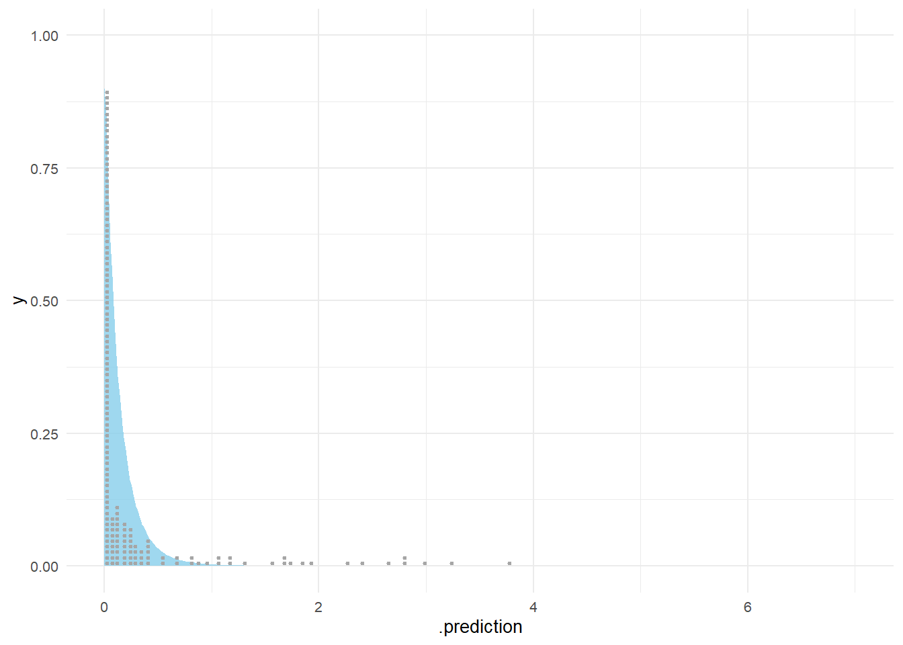
task4_df %>% modelr::data_grid(error = 0) %>%
add_predicted_draws(model.exponential, ndraws = 100, re_formula = NA) %>%
ggplot() +
stat_slab(aes(x = .prediction),
fill = "lightblue", alpha = 1) +
geom_dots(data = task4_df, aes(x = data_to_screen_slope(data.ans.slope) - data_to_screen_slope(data.select.slope))) 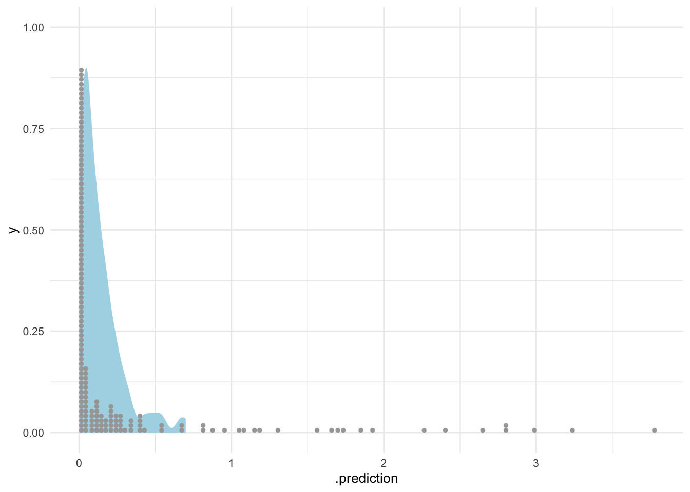
Lomax is Pareto Type II distribution, which is implemented in cmdstanr. We had similar models for task 2.
lomax_family <- custom_family(
"lomax",
dpars = c("mu", "lambda", "alpha"), # includes mu as required
links = c("identity", "log", "log"), # appropriate links
lb = c(-Inf, 0, 0), # appropriate bounds
type = "real"
)
stan_funs <- "
real lomax_lpdf(real y, real mu, real lambda, real alpha) {
return pareto_type_2_lpdf(y | 0, lambda, alpha); # mu is ignored
}
real lomax_rng(real mu, real lambda, real alpha) {
return pareto_type_2_rng(0, lambda, alpha); # mu is ignored
}
"Specify formula and prior1:
1 Note that the Half-Cauchy prior for hyperpriors led to divergent transitions, so we switched to truncated normal for priors
# Define the formula for the model
f <- bf(
error ~ 0,
mu ~ 0,
alpha ~ (1 | participantId),
lambda ~ (1 | participantId)
)
p <- c(
prior(normal(0, 1), class = Intercept, dpar = alpha),
prior(normal(0, 1), class = sd, group = participantId, dpar = alpha, lb = 0),
prior(normal(0, 1), class = Intercept, dpar = lambda),
prior(normal(0, 1), class = sd, group = participantId, dpar = lambda, lb = 0)
)model.lomax <- task4_df %>% mutate(error = abs(data_to_screen_slope(data.select.slope) - data_to_screen_slope(data.ans.slope))) %>%
mutate(error = ifelse(error < tolerance, tolerance, error)) %>%
brm(
formula = f,
data = .,
family = lomax_family,
prior = p,
stanvars = stanvar(scode = stan_funs, block = "functions"),
chains = 4,
cores = 4,
file = here("fitted_models", "task4.lomax"),
file_refit = "on_change",
control = list(adapt_delta = 0.99),
iter = 4000,
save_pars = save_pars(all = TRUE)
)Check fit:
# pairs(model.lomax)
summary(model.lomax) Family: lomax
Links: mu = identity; alpha = log; lambda = log
Formula: error ~ 0
mu ~ 0
alpha ~ (1 | participantId)
lambda ~ (1 | participantId)
Data: . (Number of observations: 160)
Draws: 4 chains, each with iter = 4000; warmup = 2000; thin = 1;
total post-warmup draws = 8000
Multilevel Hyperparameters:
~participantId (Number of levels: 16)
Estimate Est.Error l-95% CI u-95% CI Rhat Bulk_ESS
sd(alpha_Intercept) 0.40 0.29 0.01 1.09 1.00 1294
sd(lambda_Intercept) 2.26 0.47 1.50 3.34 1.00 2061
Tail_ESS
sd(alpha_Intercept) 2937
sd(lambda_Intercept) 3769
Regression Coefficients:
Estimate Est.Error l-95% CI u-95% CI Rhat Bulk_ESS Tail_ESS
lambda_Intercept -2.63 0.63 -3.82 -1.36 1.00 3936 5303
alpha_Intercept 0.01 0.28 -0.51 0.59 1.00 7048 5640
Draws were sampled using sampling(NUTS). For each parameter, Bulk_ESS
and Tail_ESS are effective sample size measures, and Rhat is the potential
scale reduction factor on split chains (at convergence, Rhat = 1).plot(model.lomax)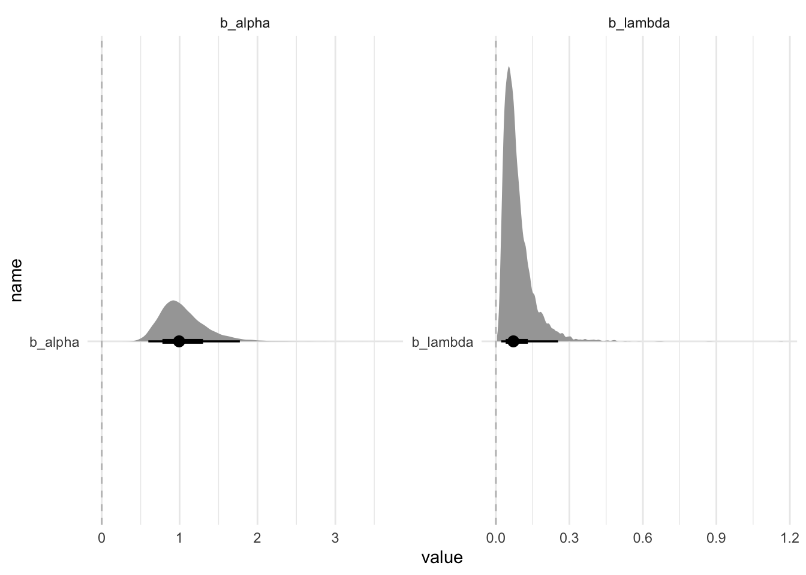
Define custom functions2 for posterior predictive check (pp_check) and model comparison (loo):
2 Check out this link for more details.
expose_functions(model.lomax, vectorize = TRUE)
# Define the posterior_predict function in R as per vignette
posterior_predict_lomax <- function(i, draws, ...) {
alpha <- draws$dpars$alpha[i]
lambda <- draws$dpars$lambda[i]
# Use Stan's rng function indirectly via brms
lomax_rng(0, lambda, alpha)
}
log_lik_lomax <- function(i, prep){
alpha <- brms::get_dpar(prep, "alpha", i = i)
lambda <- brms::get_dpar(prep, "lambda", i = i)
y <- prep$data$Y[i]
lomax_lpdf(y, 0, lambda, alpha)
}pp_check(model.lomax, ndraws = 100)
pp_check(model.lomax, ndraws = 100, type = "pit_ecdf")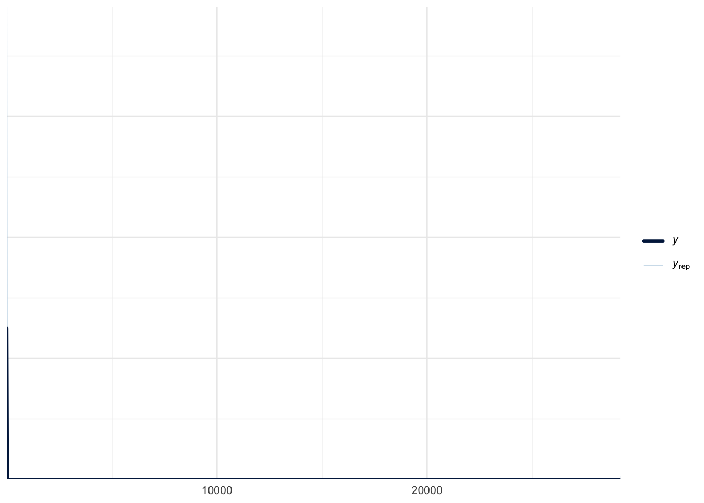
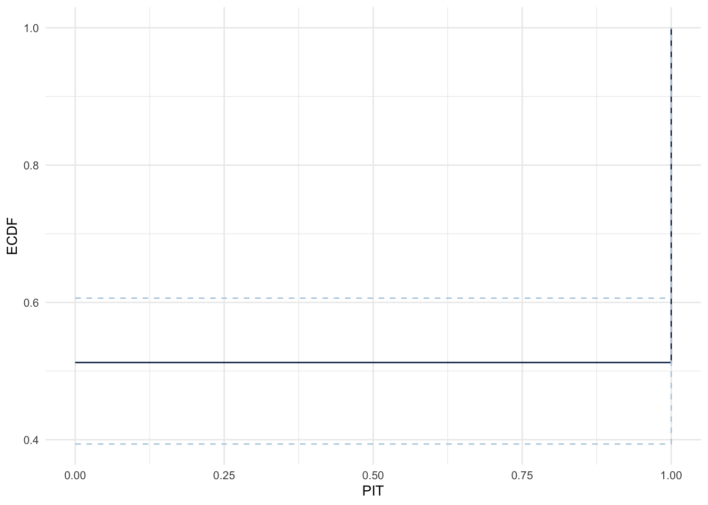
Overlay plot:
prediction <- task4_df %>%
mutate(error = abs(data_to_screen_slope(data.ans.slope) - data_to_screen_slope(data.select.slope))) %>%
add_predicted_draws(model.lomax, ndraws = 100)
prediction %>% ggplot() +
stat_slab(aes(x = .prediction),
fill = "lightblue", alpha = 1) +
geom_dots(data = task4_df, aes(x = data_to_screen_slope(data.ans.slope) - data_to_screen_slope(data.select.slope)))
Specify formula and prior:
f <- bf(
error ~ 0,
mu ~ (1 | participantId), # log link
shape ~ (1 | participantId), # log link
family = weibull
)
p <- c(
prior(normal(0, 1), class = Intercept),
prior(normal(0, 1), class = sd, group = participantId, lb = 0),
prior(normal(0, 1), class = Intercept, dpar = shape),
prior(normal(0, 1), class = sd, group = participantId, dpar = shape, lb = 0)
)Fit the model:
model.weibull <- task4_df %>%
mutate(error = abs(data_to_screen_slope(data.ans.slope) - data_to_screen_slope(data.select.slope))) %>%
mutate(error = ifelse(error < tolerance, tolerance, error)) %>% # brms needs value to be > 0
brm(formula = f,
data = .,
prior = p,
chains = 4,
cores = 4,
file = here("fitted_models", "task4.weibull"),
file_refit = "on_change",
save_pars = save_pars(all = TRUE),
iter = 6000
)Check fit and posterior:
summary(model.weibull) Family: weibull
Links: mu = log; shape = log
Formula: error ~ 0
mu ~ (1 | participantId)
shape ~ (1 | participantId)
Data: . (Number of observations: 160)
Draws: 4 chains, each with iter = 6000; warmup = 3000; thin = 1;
total post-warmup draws = 12000
Multilevel Hyperparameters:
~participantId (Number of levels: 16)
Estimate Est.Error l-95% CI u-95% CI Rhat Bulk_ESS Tail_ESS
sd(Intercept) 1.31 0.30 0.80 1.98 1.00 4338 7143
sd(shape_Intercept) 0.67 0.16 0.41 1.03 1.00 3742 6350
Regression Coefficients:
Estimate Est.Error l-95% CI u-95% CI Rhat Bulk_ESS Tail_ESS
Intercept -1.25 0.40 -2.01 -0.46 1.00 4507 6830
shape_Intercept -0.71 0.18 -1.06 -0.33 1.00 3241 5619
Draws were sampled using sampling(NUTS). For each parameter, Bulk_ESS
and Tail_ESS are effective sample size measures, and Rhat is the potential
scale reduction factor on split chains (at convergence, Rhat = 1).plot(model.weibull)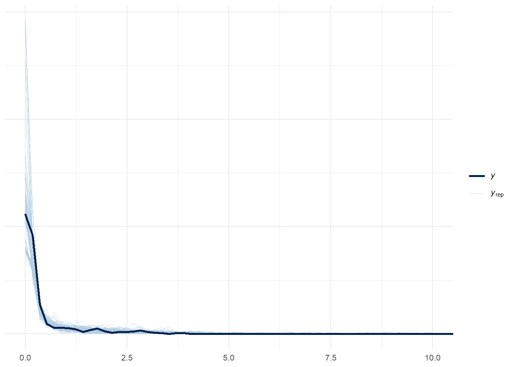
pp_check(model.weibull, ndraws = 100) +
coord_cartesian(xlim = c(0, 10)) +
theme(text = element_text(size = 10)) -> p1
pp_check(model.weibull, ndraws = 100, type = "pit_ecdf") +
theme(text = element_text(size = 10)) -> p2
p1
p2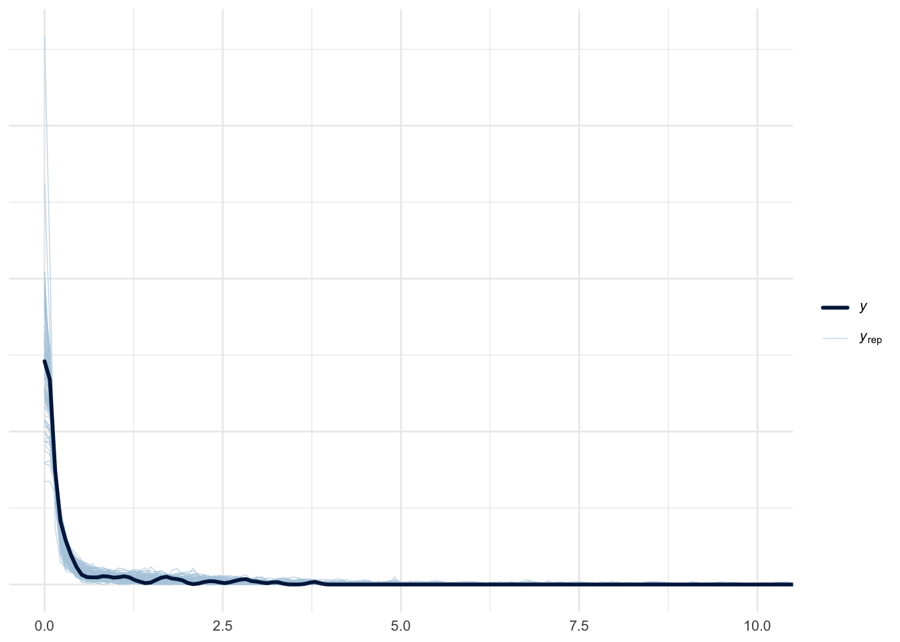
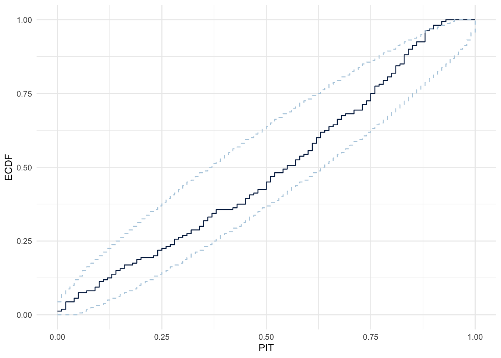
Overlay plot:
# prediction <- task4_df %>%
# mutate(error = abs(data_to_screen_slope(data.ans.slope) - data_to_screen_slope(data.select.slope))) %>%
# add_predicted_draws(model.weibull, ndraws = 100)
task4_df %>% modelr::data_grid(error = 0) %>%
add_predicted_draws(model.weibull, re_formula = NA) %>%
ggplot() +
stat_slab(aes(x = .prediction),
fill = "lightblue", alpha = 1) +
geom_dots(data = task4_df, aes(x = data_to_screen_slope(data.ans.slope) - data_to_screen_slope(data.select.slope)))
task4_df %>% modelr::data_grid(error = 0) %>%
add_predicted_draws(model.weibull, re_formula = NA) %>%
ggplot() +
stat_slab(aes(x = .prediction),
fill = "lightblue", alpha = 1) +
geom_dots(data = task4_df, aes(x = data_to_screen_slope(data.ans.slope) - data_to_screen_slope(data.select.slope))) +
labs(y = "Probability", x = "Signed error") +
coord_cartesian(xlim=c(0, 5))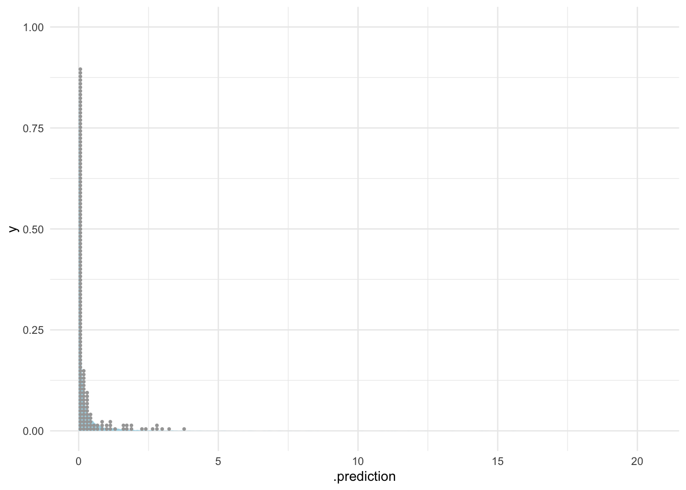
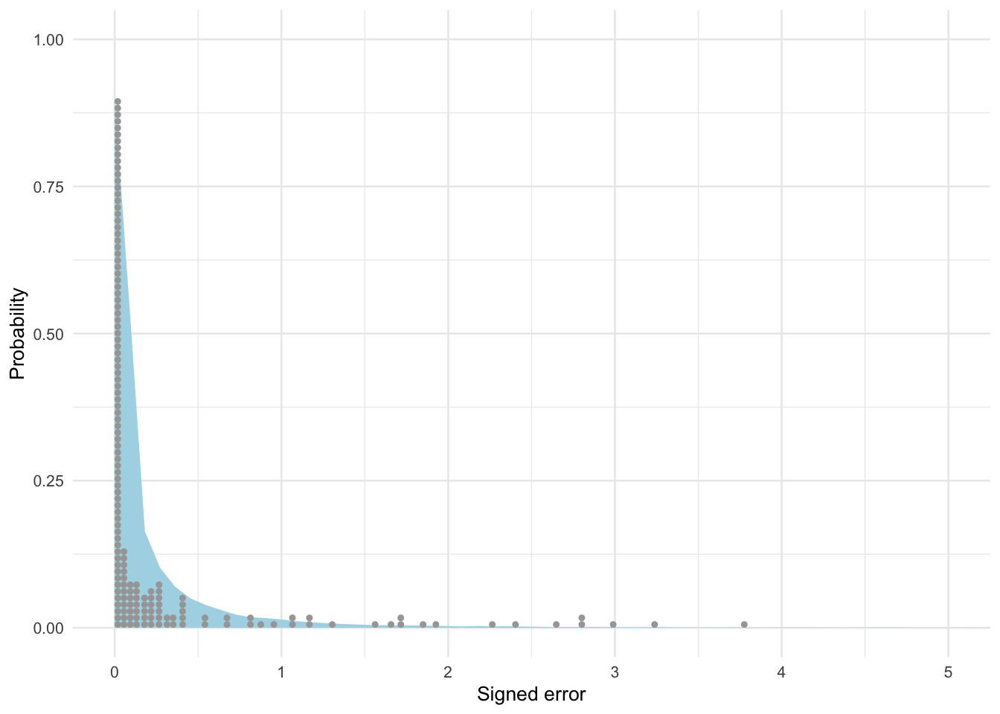
Posterior draws + strip plot of actual answers:
task4_df %>% modelr::data_grid(error = 0,
participantId = unique(participantId)) %>%
add_predicted_draws(model.weibull, ndraws = 100) %>%
ggplot() +
stat_slab(aes(x = .prediction, group = .draw),
color = "lightblue", alpha = 0.5, fill = NA,
n = 3000, linewidth = 0.5) +
scale_thickness_shared() +
coord_cartesian(xlim = c(0, 4)) +
geom_rug(data = task4_df, aes(x = data_to_screen_slope(data.ans.slope) - data_to_screen_slope(data.select.slope)), size = 0.5) +
stat_slab(data = task4_df, aes(x = data_to_screen_slope(data.ans.slope) - data_to_screen_slope(data.select.slope)),
color = "darkblue", fill = NA, n = 3000, size = 0.5) +
labs(y = "density", x = "signed error" ) +
scale_y_continuous(breaks = 0) -> p
p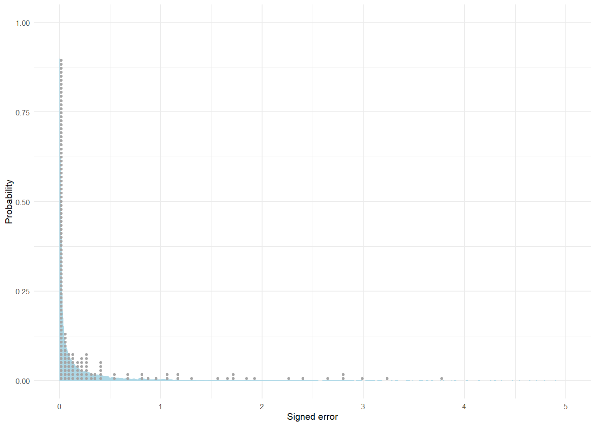
Formula and prior:
f <- bf(error ~ 0,
mu ~ (1 | participantId),
sigma ~ (1 | participantId),
family = lognormal())
p <- c(
prior(normal(0, 1), class = Intercept),
prior(normal(0, 1), class = sd, group = participantId, lb = 0),
prior(normal(0, 1), class = Intercept, dpar = sigma),
prior(normal(0, 1), class = sd, group = participantId, dpar = sigma, lb = 0)
)Fit the model:
model.lognormal <- task4_df %>%
mutate(error = abs(data_to_screen_slope(data.ans.slope) - data_to_screen_slope(data.select.slope))) %>%
mutate(error = ifelse(error < tolerance, tolerance, error)) %>% # brms needs value to be > 0
brm(formula = f,
data = .,
prior = p,
chains = 4,
cores = 4,
file = here("fitted_models", "task4.lognormal"),
file_refit = "on_change",
save_pars = save_pars(all = TRUE),
control = list(adapt_delta = 0.99),
iter = 4000
)Check fit and posterior:
summary(model.lognormal) Family: lognormal
Links: mu = identity; sigma = log
Formula: error ~ 0
mu ~ (1 | participantId)
sigma ~ (1 | participantId)
Data: . (Number of observations: 160)
Draws: 4 chains, each with iter = 4000; warmup = 2000; thin = 1;
total post-warmup draws = 8000
Multilevel Hyperparameters:
~participantId (Number of levels: 16)
Estimate Est.Error l-95% CI u-95% CI Rhat Bulk_ESS Tail_ESS
sd(Intercept) 2.14 0.39 1.49 3.01 1.00 2600 4630
sd(sigma_Intercept) 0.85 0.18 0.56 1.28 1.00 1852 3545
Regression Coefficients:
Estimate Est.Error l-95% CI u-95% CI Rhat Bulk_ESS Tail_ESS
Intercept -2.83 0.55 -3.90 -1.72 1.00 2062 3416
sigma_Intercept 1.02 0.22 0.58 1.45 1.00 1405 2542
Draws were sampled using sampling(NUTS). For each parameter, Bulk_ESS
and Tail_ESS are effective sample size measures, and Rhat is the potential
scale reduction factor on split chains (at convergence, Rhat = 1).plot(model.lognormal)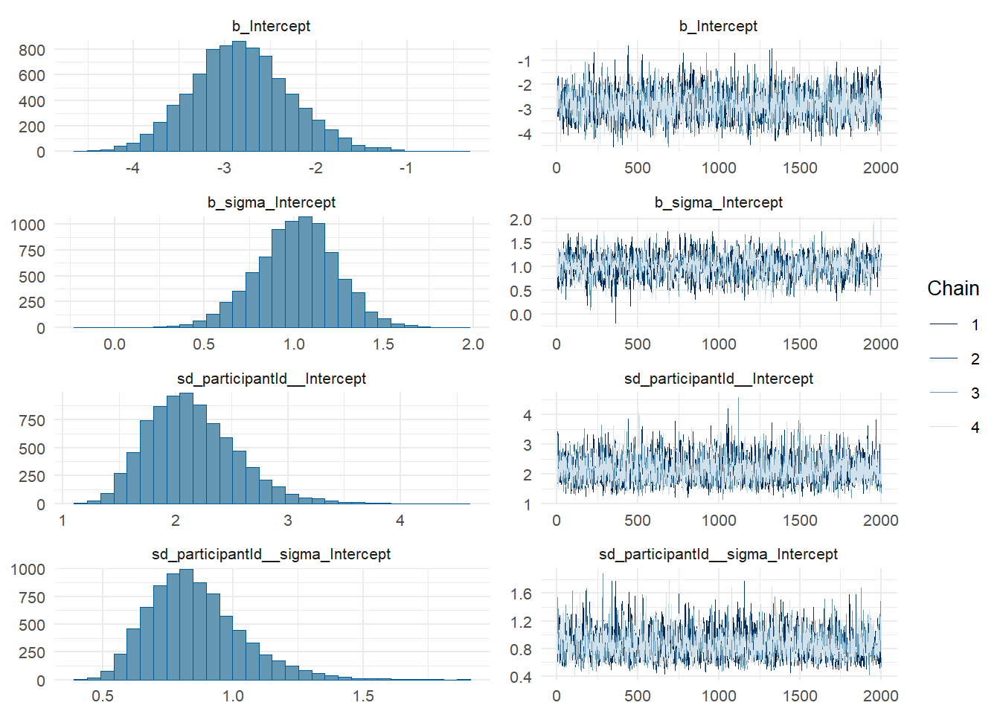
pp_check(model.lognormal, ndraws = 100)
pp_check(model.lognormal, ndraws = 100, type = "pit_ecdf")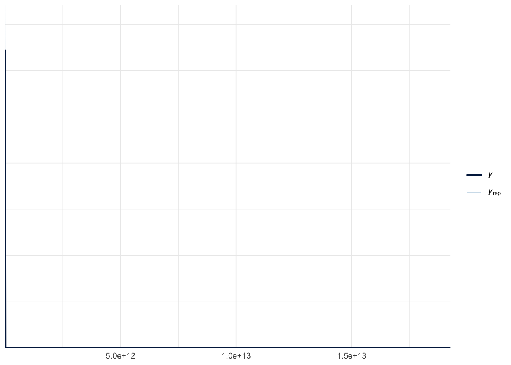
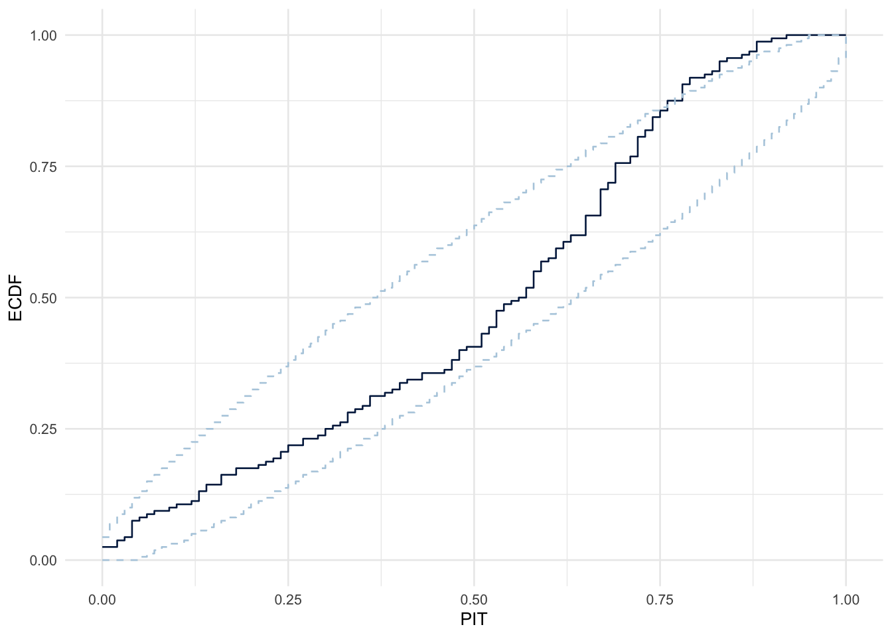
Overlay plot:
prediction <- task4_df %>%
mutate(error = abs(data_to_screen_slope(data.ans.slope) - data_to_screen_slope(data.select.slope))) %>%
add_predicted_draws(model.lognormal, ndraws = 100)
prediction %>% ggplot() +
stat_slab(aes(x = .prediction),
fill = "lightblue", alpha = 1) +
geom_dots(data = task4_df, aes(x = data_to_screen_slope(data.ans.slope) - data_to_screen_slope(data.select.slope))) +
xlim(0, 10)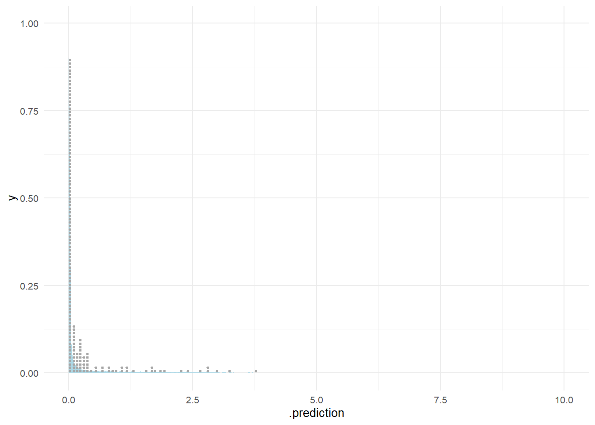
task4_df %>% modelr::data_grid(error = 0) %>%
add_predicted_draws(model.lognormal, re_formula = NA, ndraws = 100) %>%
ggplot() +
stat_slab(aes(x = .prediction),
fill = "lightblue", alpha = 1) +
geom_dots(data = task4_df, aes(x = data_to_screen_slope(data.ans.slope) - data_to_screen_slope(data.select.slope)))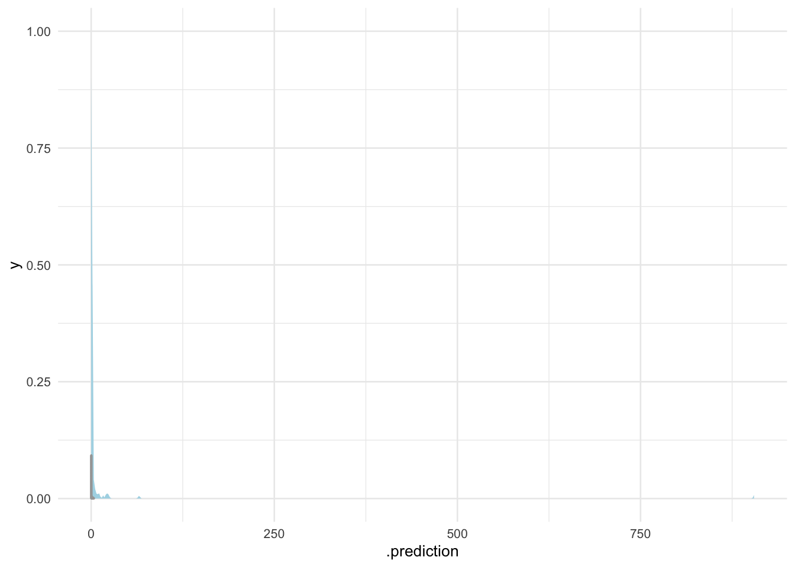
loo(model.exponential, model.lomax, model.weibull, model.lognormal,
moment_match = TRUE) Output of model 'model.exponential':
Computed from 12000 by 160 log-likelihood matrix.
Estimate SE
elpd_loo 172.6 27.1
p_loo 29.8 6.8
looic -345.2 54.2
------
MCSE of elpd_loo is 0.1.
MCSE and ESS estimates assume MCMC draws (r_eff in [0.5, 1.9]).
All Pareto k estimates are good (k < 0.7).
See help('pareto-k-diagnostic') for details.
Output of model 'model.lomax':
Computed from 8000 by 160 log-likelihood matrix.
Estimate SE
elpd_loo 199.6 31.7
p_loo 42.0 4.9
looic -399.2 63.5
------
MCSE of elpd_loo is 0.1.
MCSE and ESS estimates assume MCMC draws (r_eff in [0.3, 1.3]).
All Pareto k estimates are good (k < 0.7).
See help('pareto-k-diagnostic') for details.
Output of model 'model.weibull':
Computed from 12000 by 160 log-likelihood matrix.
Estimate SE
elpd_loo 289.5 42.4
p_loo 28.5 4.4
looic -579.1 84.7
------
MCSE of elpd_loo is NaN.
MCSE and ESS estimates assume MCMC draws (r_eff in [0.5, 1.6]).
All Pareto k estimates are good (k < 0.7).
See help('pareto-k-diagnostic') for details.
Output of model 'model.lognormal':
Computed from 8000 by 160 log-likelihood matrix.
Estimate SE
elpd_loo 254.0 40.7
p_loo 41.4 10.1
looic -508.0 81.4
------
MCSE of elpd_loo is NA.
MCSE and ESS estimates assume MCMC draws (r_eff in [0.7, 1.6]).
Pareto k diagnostic values:
Count Pct. Min. ESS
(-Inf, 0.7] (good) 158 98.8% 386
(0.7, 1] (bad) 1 0.6% <NA>
(1, Inf) (very bad) 1 0.6% <NA>
See help('pareto-k-diagnostic') for details.
Model comparisons:
elpd_diff se_diff
model.weibull 0.0 0.0
model.lognormal -35.6 6.8
model.lomax -89.9 23.0
model.exponential -117.0 29.7 The Weibull model performs the best.
pp_check(model.exponential, ndraws = 100, type = "pit_ecdf") +
labs(title = "Exponential")
pp_check(model.lomax, ndraws = 100, type = "pit_ecdf") +
labs(title = "Lomax")
pp_check(model.weibull, ndraws = 100, type = "pit_ecdf") +
labs(title = "Weibull")
pp_check(model.lognormal, ndraws = 100, type = "pit_ecdf") +
labs(title = "Log-Normal")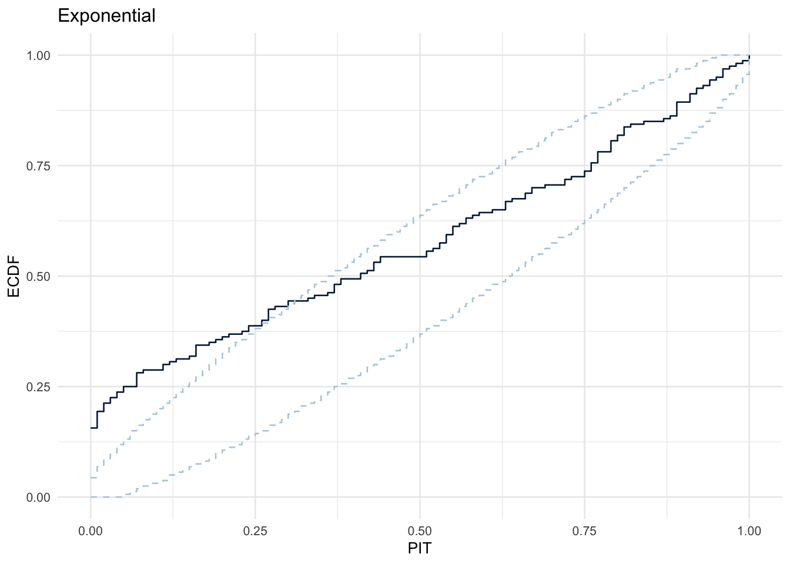
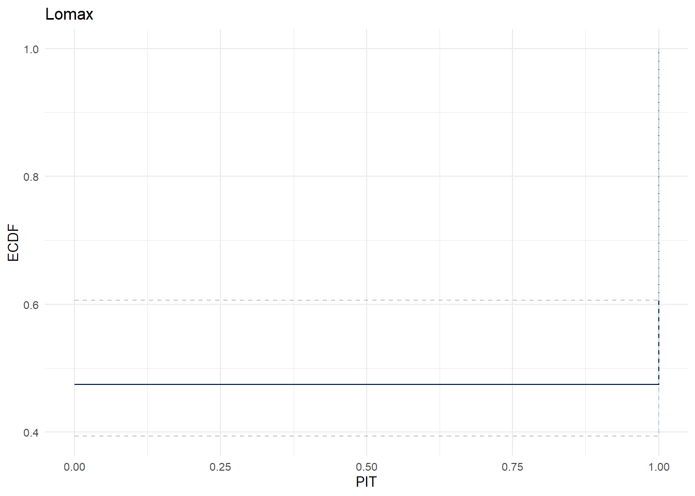
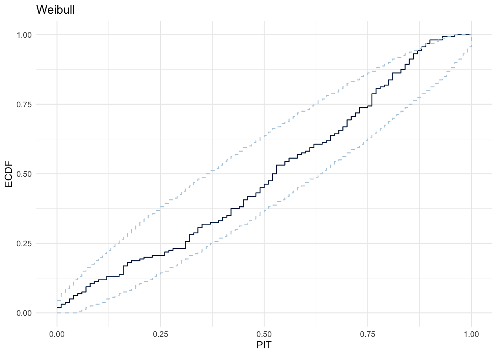
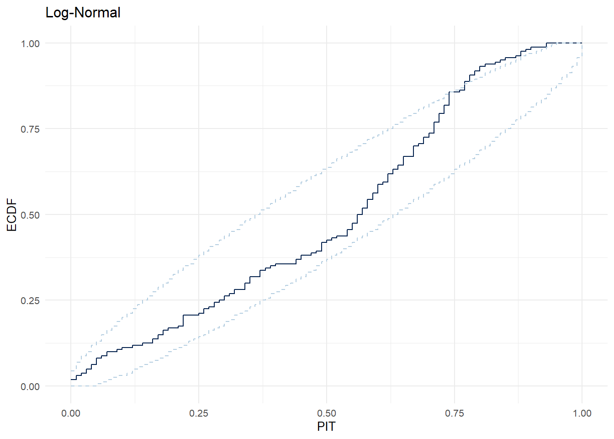
pit_ecdf is the empirical CDF of PIT (Probability Integral Transform) values. This helps us assess whether the model is well-calibrated; if it is, then the PIT ECDF plot should follow the 45 degree diagonal line, which is what we see for Weibull.